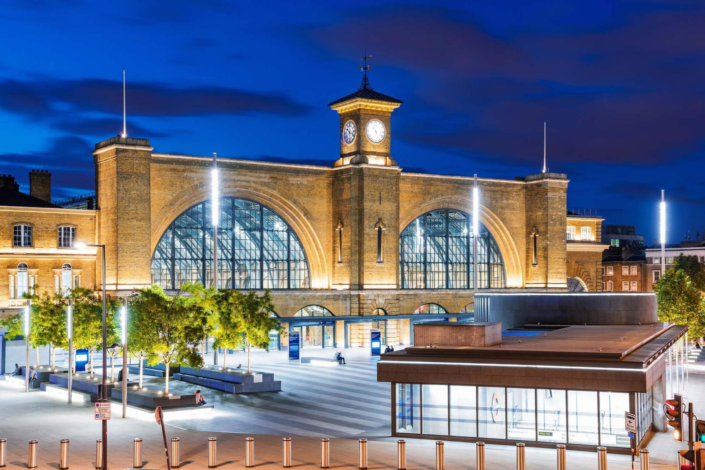

Having deplored the demolition of the old Euston station and its famous Arch in 1961, Betjeman was on the warpath again in 1966, damning as 'a criminal folly' the then nationalised British Railway’s plans to knock down George Gilbert Scott’s Midland Grand Hotel at St Pancras, and to amalgamate the terminus with King’s Cross to create 'a single modern terminal.'
The destruction of St Pancras never happened, of course. It was Grade I listed as far back as 1967 but, writes Jenkins, who recalls staging a party on the hotel’s dirt-encrusted grand staircase to draw attention to its plight in the early 1980s, 'this did not stop its dereliction.' It looked a basket case until the new century, when the developer Manhattan Lofts and the Marriott hotel chain joined forces. Aided by the relocating of Eurostar from Waterloo, an astonishing transformation was completed by 2007.
According to Jenkins, 'nothing so defines the rebirth of the British station….as the new St Pancras and the opening of its rightly called Renaissance Hotel.' How appropriate that a beautifully realised statue of Betjeman, gazing up in wonderment at William Barlow’s massive, single-span 1860s trainshed roof, is prominently sited close to the platforms, with a pub in his name near the main entrance.
Jenkins hasn’t written a station history book as such, though for the majority of readers it has all the information you’d need. The author’s fluid style seldom disappoints. If you want to go deeper without entering spotter territory, Steven Parissien’s recent The English Railway Station, published by English Heritage in 2014, can also be recommended. Over 156 pages, Parissien succinctly traces the genesis of early stations, the early entrepreneurs and engineers of the railway mania, and the building of the cathedrals of steam.